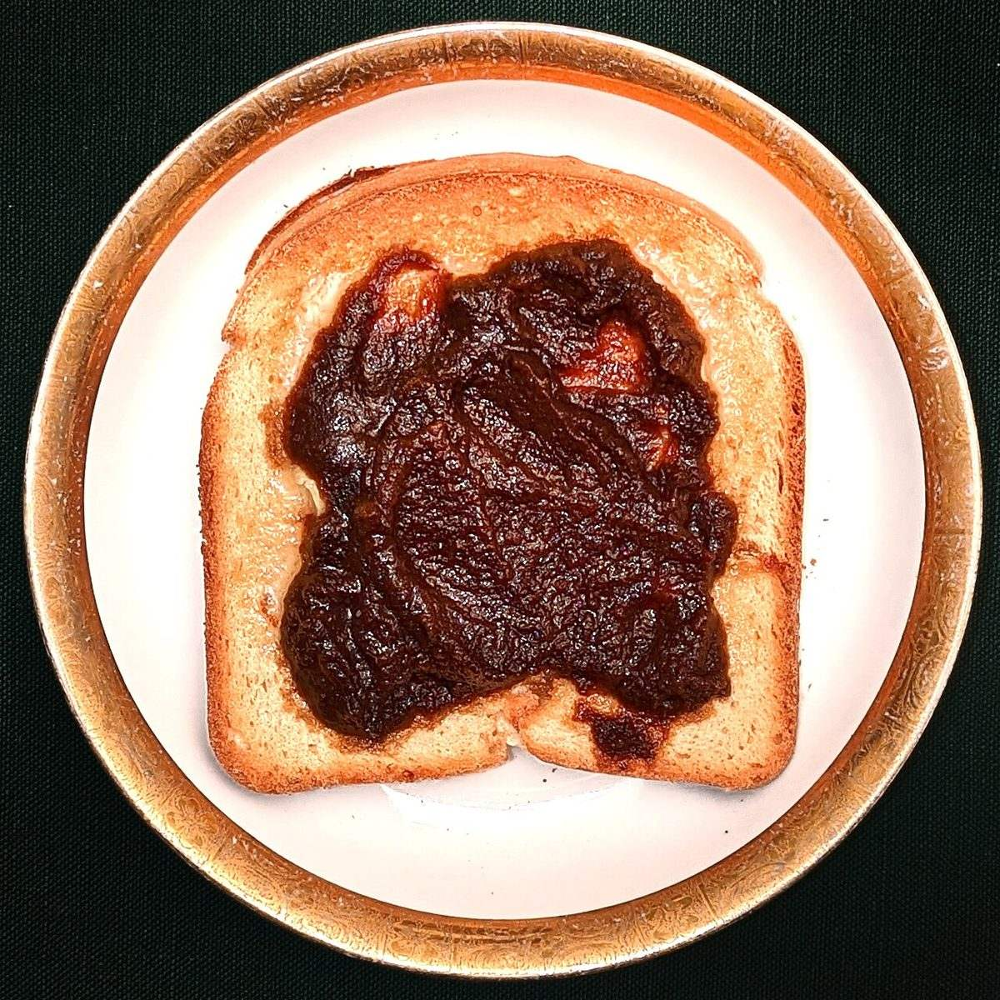

イメージ例
Instagramをのぞいてみたいお店です。実際に足を運べる日を楽しみにしています。
口コミ(イメージ例)
拡張スロットは、あとからカードを足せる差し込み口。ここでは、制作側が創作した三つの声を差し込んでいます。
この頁の部位 / 3
あとからカードを足せる、横に長い差し込み口。
PCIe

想像した声
イメージ例
Instagramをのぞいてみたいお店です。実際に足を運べる日を楽しみにしています。
イメージ例
パンが好きなので、Instagramの投稿を見られる日が楽しみです。
イメージ例
お店の情報が公開されたら、ゆっくり読んでみたいです。
上の三つは制作側の創作で、実在のお客様の投稿ではありません。